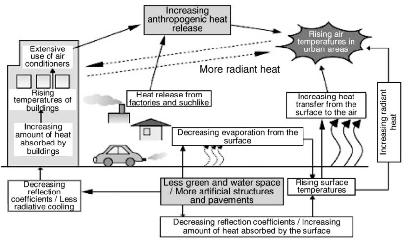
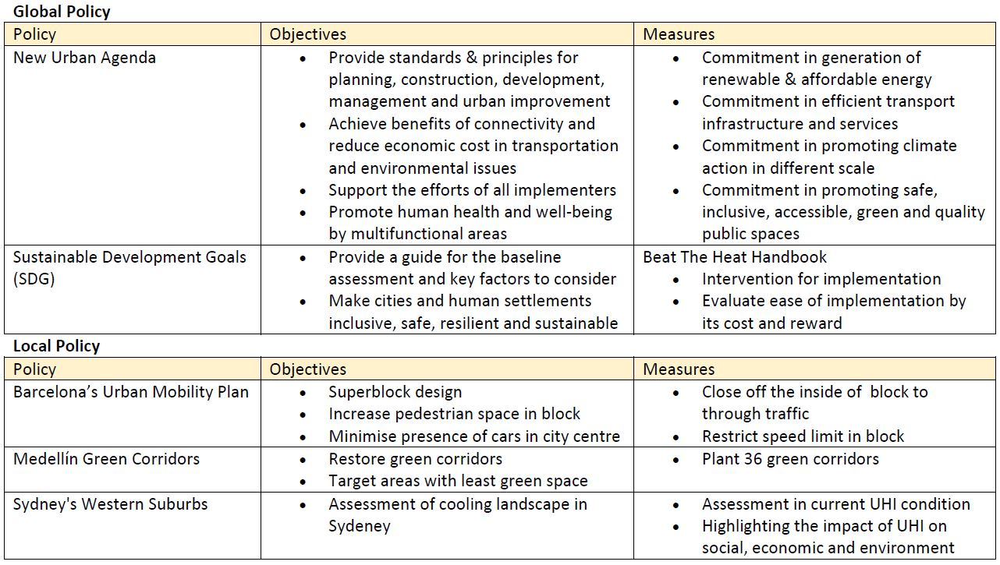
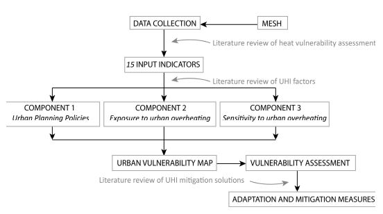

8 Temperature and Policy
8.1 Summary
This week focused on urban heat island (UHI) effect to study how it is targeted in global policies and local policies. Urban heat island effect is a phenomenon where urban area retain more heat than sub-urban/ rural area due to urban design and density, causing a higher atmospheric and surface temperature in urban areas. The key factors of urban heat island effect are urbanisation, increasing manufactured materials and increasing heating and cooling energy needs, which the relationship is shown in the figure below (Mohajerani, Bakaric, and Jeffrey-Bailey 2017).

In the view of the social, environmental and economic impact of UHI, global and local policies are proposed and implemented to ease the UHI effect, while promoting sustainability in urban planning and design. The following table concluded the examples of policies explained in class:

The examples above demonstrate a common problem that no specific methodology and way of implementation are given. Rethinking on how an effective planning can be proposed, some considerations for policy making on UHI effect are discussed with case studies:
1. Selected Methodology and Data
Environmental issue should be investigated with a correct approach and dataset. An example is the evaluation of implementing landscape cooling methods (e.g. surface coating, cool roads) by analysing air and surface temperature, which study revealed that there is no significant relationship and effectiveness in between. Evaluation should be done with the right matrices and provide justification on the selected approach.
2. Disparities in City
Policies should consider how neighbourhoods are designed as not all areas in have equal access to cooler spaces. These disparities are related to the previous planning, development and maintenance of communities, especially for places that have housing segregation, causing an unequal scene in accessing cooler space, like the green space. Example shown in class is the formerly redlined areas in Portland.
3. Application of Data
Although applying EO data to inform the cooling strategy, the Fremantle’s Urban Forest Plan failed to comprehensively identify location that requires cooling. The data analysis they did was relied on single temperature image with aggregation, which ignored the data trend and reduce the reproducibility of strategy. In this case, the analysis did not provide sufficient data and handle the data correctly, causing a misleading result and interpretation.
4. Effectiveness of Planning Requirements
Despite detailed statistical requirements in greening strategy are provided, the policy in Perth Metropolitan Area and Singapore failed to specifically define the arrangement conditions, such as providing definition of open space and indicating the requirement on placement. Thus, when designing an approach in policy/ plan, one should consider how resources are eqaully and equitably distributed to ensure the strategy is sustainable.
8.2 Application
Many studies proposed various methodology to integrate urban planning policies for mitigating UHI effect. This section will present some assessment method that monitor UHI in local-level policies, and analyse the effectiveness comparing to case studies in lecture.
8.2.1 Urban Heat Island’s Vulnerability Assessment
A methodology for assessing UHI vulnerability is proposed by Técher, Ait Haddou, and Aguejdad (2023) to identify prone area with high vulnerability . A total of 15 input indicators are developed from vulnerability studies and generate urban vulnerability map based on 3 components:
1. Urban planning policies: green spaces, building footprint, building height, construction’s location & air conditioning
2. Exposure to urban overheating: topography, proximity to natural areas, SUHI intensity, population density & land uses (daytime & nightime)
3. Sensitivity to urban overheating: sensitive population, heath and care facilities, low-income households & building age
These indicators are weighted by explicit weights in calculation and the dimensionality of combined output is reduced by principal component analysis.
Authors adopted the UHI vulnerability assessment scheme in the Mediterranean city of Montpellier context to reveal that the most vulnerable zones are distributed close to urban centers and analysis the composition of landuse, footprint, planted space and air conditioning in these zone.

The proposed framework is comprehensively built by considering various input data to analysis the UHI effect. This study shows a lot of effort in literature review for the design of framework, especially where indicators of each component are clearly defined with parameter settings and justification on effects of UHI vulnerability based on relevant literature. The source of data, processing and matrices are also transparently presented, leading to a high reproducibility in future implementation and improvement. Comparing to examples in class, this assessment scheme provides a clear planning requirement (e.g. clear definition of urban vulnerability levels), approach that has justified relationship with UHI and framework with diverse considerations (e.g. socio-economic, topological, demographic aspects). Based on this assessment, policy makers can identify spatial pattern in generic scale, and specifically analysis according to different indicators.
8.2.2 Urban Life Cycle Assessment
Susca and Pomponi (2020) suggested a pathway to expand the current life cycle assessment (LCA) framework from only capturing the complexity and impact of urban settlement, to include interactions between built environment and local climate, which enables effective policy making for UHI effects. Referencing LCA studies that focused on UHI mitigation, authors proposed that UHI can be included in methodology by either simulating the interactions between built environment and local climate by physics-based model, or statistically and spatially aggregate relevant mathematical model, which characterisation factors for smog, water quality resources and human health can be inputted to the LCA methodology.
Similar to the research above, this study also justify the approach design and factor selection by reviewing published literature. Authors suggested potential indicators that can be integrated to LCA for evaluating UHI-mitigation measures. Applying this expanded urban LCA in policy making may able to justify the selected methodology/ factors by literature. However, the expanded framework has shortcomings in the diversity of factors that it considered and the statistics/ mathematical calculation it provided is based on specific region/ case study, causing a limit direct application of proposed methodology, as urban settlements in different city are unique in structure. Therefore, reviewing the consideration of policy making mentioned this week, this assessment framework may have deficency in showing the disparities in cities.
8.3 Reflection
This week’s content is interesting for me as case studies from different countries are discussed through analysing the objective, background and methodology of local UHI mitigating policies. The lecture content guide us through the evaluation of policy’s effectiveness by showing how policy can have shortcomings in its framework and design. The redlining example in America in particular brings up a lot of consideration in policy making, which emphasis how the history and background of urban planning can highly impact the equality between neighbourhoods, such as the inequality of accessing green space which the quantity and quality of urban green space may varies between places.
An important idea I retrived from this week content is literature review acts as an important role when structuring framework for policy. Other than providing insight on how the current system is formed based on historical record, it also assist the justification of definitions, methodology by previous literature and risk evaluation on approach. Therefore, in future applications, I have a better idea on how I should approach an issue/ project that involve policies, and how I can evaluate a policy critically.